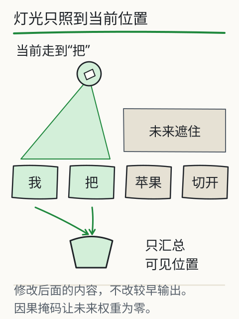
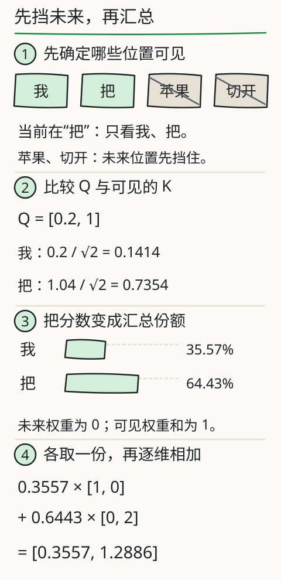
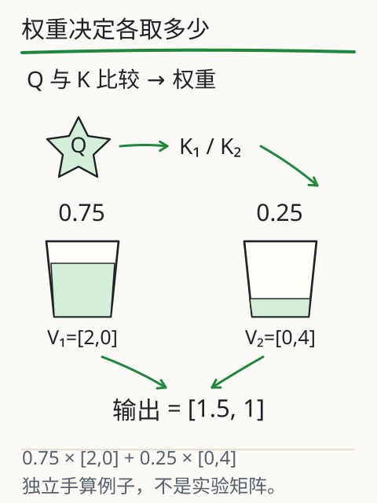

模型怎样利用前文？
用手遮住“我把苹果切开”的后半句，只露出“我把”。站在“把”这个位置，你能用到“苹果”吗？如果后半句已经摆在训练材料里，怎样防止模型提前偷看？

图中的照亮范围表示可见位置，遮挡处表示未来。下面始终站在“把”的位置，把一次计算分开看：先认出哪些位置可用，再比较它们的分数，最后按权重汇总数值。留意“苹果”和“切开”：它们虽然写在整句里，这次却不能贡献内容。
慢放一次：注意力怎样算出一个向量
使用 X04 的同一组人工 Q/K/V，当前位置固定在“把”。这是单头因果注意力的一次计算；后文 0.75/0.25 是另一道手算例。
当前位置是“把”，可见“我”和“把”；“苹果”“切开”在未来，要先屏蔽。后面的文字即使已经画在纸上，也不能参与当前位置的汇总。
Q = [0.2, 1]。和“我”的 K 点积得 0.2，和“把”的 K 点积得 1.04；除以 √2，分数分别是 0.1414 和 0.7354。
只对可见分数做 softmax，得到“我” 35.57%、“把” 64.43%。未来两项是 0，可见权重加起来是 1。权重用于决定从各个 V 取多少。
0.3557 × [1, 0] + 0.6443 × [0, 2] = [0.3557, 1.2886]。图上保留四位小数，计算使用未舍入值。这个结果仍是向量，后面还要继续计算，不能直接当成完整推理的解释。

- 先确定哪些位置可见。当前位置是“把”，可见“我”和“把”；“苹果”“切开”在未来，要先屏蔽。后面的文字即使已经画在纸上，也不能参与当前位置的汇总。
- 比较 Q 与可见的 K。Q = [0.2, 1]。和“我”的 K 点积得 0.2，和“把”的 K 点积得 1.04；除以 √2，分数分别是 0.1414 和 0.7354。
- 把分数变成汇总份额。只对可见分数做 softmax，得到“我” 35.57%、“把” 64.43%。未来两项是 0，可见权重加起来是 1。权重用于决定从各个 V 取多少。
- 各取一份，再逐维相加。0.3557 × [1, 0] + 0.6443 × [0, 2] = [0.3557, 1.2886]。图上保留四位小数，计算使用未舍入值。这个结果仍是向量，后面还要继续计算，不能直接当成完整推理的解释。
看完后，试着破坏它。在下方实验中选择第二个位置“把”，再点修改未来 V 的按钮，把看不见的位置改得很大。先猜输出会变，还是不变，再对照修改前后的数值。

这一行能用到哪些位置？
展开 Q/K/V 与计算过程
只计算一层单头因果注意力；Q/K/V 为人工给定，不是模型对这句文字的真实内部读数，不能用权重解释完整推理。
先算匹配，再汇总内容
先把 Q、K、V 三个字母放到具体动作里：Q 和 K 用来算“这一处该占多少”，V 提供“这一处拿什么来汇总”。当前位置的 Q 与可见位置的 K 逐一比较，得到的分数再变成权重。这三组数通常由输入表示经过学到的不同投影得到。上面的实验直接给出小矩阵，省去投影计算，让你看清比较和汇总怎样接在一起。
选中“把”后，顺着数值往下走：它的 Q 分别与“我”和“把”的 K 求点积，再除以维度平方根；softmax 把可见分数变成权重；最后，各位置的 V 按这些权重加起来，得到新向量。
最后得到的是一组数。把“我”的 V 按它的权重缩放，把“把”的 V 按另一个权重缩放，再按相同维度相加；两个位置都可以贡献内容。因此，这里的百分比表示这一层、这一头“混合时放多少”，不是判断某句话有多大概率为真，也不是从几个词里抽中一个就结束。
遮住未来，避免偷看目标
那块“遮挡”在计算里怎样起效？在 softmax 之前，把未来位置的分数设成负无穷，取指数后就是零；界面把它写成“屏蔽”。这样，可见位置的权重和为 1，未来位置的权重为 0。
现在看刚才的尝试：站在“把”的位置，只改“苹果”和“切开”的 V，汇总应该不变，因为它们都乘了零。移到最后一个位置，未来已经为空，修改按钮也会停用。这就是用一次改动检验因果边界。
训练时可以把整段已知文本一起送入、并行计算多个位置，但遮挡仍然要在。否则模型拿着后面的目标来预测它自己，就像做题时提前翻到了答案。
一个注意力头还不能解释整个模型
到这里，我们只走完了一次局部汇总。真实网络还要组合多个头，并经过前馈层、残差连接和归一化等计算。位置信息也有用：完全抹掉顺序，仅凭同一组词，很难分清“甲帮助乙”和“乙帮助甲”。
课末的“深入图”把其中一种 pre-norm 简化块展开：先归一化，再进子层，子层结果与原路径相加；前馈子层重复这种结构。它帮助你找到注意力在一层里的位置。不同架构会采用不同的位置、归一化和注意力方案，并不全长这样。
注意力权重也不是完整的思考记录。我们没有取得 DeepSeek V4.1 Flash 或 Kimi K3 的内部 Q/K/V，页面上的矩阵不能归给它们。
需要比较的材料，先让它看见
整理通知时，把需要比较的原句放进当前可见材料，清楚注明 A、B 两个版本。材料没有进入输入，模型就无法通过这次注意力计算使用它；进入了输入，也仍然需要检查回答是否准确采用了证据。
把一个位置的计算，真的走完一次
现在暂时合上分镜和实验，用更整齐的一组数做纸笔练习。计算顺序不变：输入表示经过不同的参数投影，得到 Q、K、V 三组数；当前位置的 Q 与各处 K 比较，V 等着按权重汇总。这是三个计算用途，不是三位会主动找答案的角色。比较时先算 Q·K/√dₖ，把未来位置的分数设成负无穷，再过 softmax，得到可见位置的权重。
假定已经算出了 0.75 和 0.25 两个权重，对应的 V 是 [2,0]、[0,4]。你会怎样把它们混在一起？第一维算 0.75×2+0.25×0=1.5，第二维算 0.75×0+0.25×4=1，合起来就是 0.75×[2,0]+0.25×[0,4]=[1.5,1]。

这是与前面分镜和实验矩阵分开的独立手算例：0.75 和 0.25 是这里给定的权重，不是从前面的矩阵算来的。两处内容都进入了当前位置，只是贡献多少不同。权重说明的是这一次汇总的系数，单凭它还读不出模型完整的推理原因。
一头算完，还没有走出这一层。多个头可以用不同投影各算一份，拼接后再经过输出投影；前馈网络继续变换当前位置的表示。残差把原表示与子层结果相加，给信息和梯度额外的路径；归一化调节数值尺度。归一化安排在子层前还是后，要看具体架构，不能把两种方案叠成一个固定流程。
别忘了最初那条句子还有顺序。“只看前面”告诉模型哪些位置可见，却没有完整交代第几个位置、相距多远。位置编码或 RoPE 等方法用不同方式补进顺序或相对位置信息。能不能处理训练时没见过的长度，还要实际评测，不能单凭公式就推出无限上下文。
把这些动作叠成多层，表示会一次次更新，最后经输出投影得到词表分数。再回头看刚才的 [1.5,1]：它只是一次局部汇总，离最终答案还有很多计算。能复算这一步，是理解整条数据流的起点。
再深一层
本实验是 Attention(Q,K,V) = softmax(mask(QKᵀ / √d)) V，其中 d = 2。选第二个位置，第一分量等于 权重[我] × 1 + 权重[把] × 0，第二分量等于 权重[我] × 0 + 权重[把] × 2。你可以对照页面的小数自己复算，显示时的四舍五入会带来少量误差。
读整条公式时，按从里到外的顺序走：Kᵀ 把 K 的行列交换，让 Q 能与各位置的 K 逐一求点积；d 是每个 Q、K 向量的分量数，√d 是它的平方根，用于缩放分数。mask 遮住未来，softmax 把剩下的分数变成权重，最后乘 V，才得到前面亲手算过的加权结果。